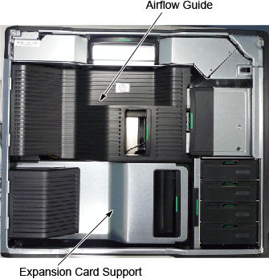
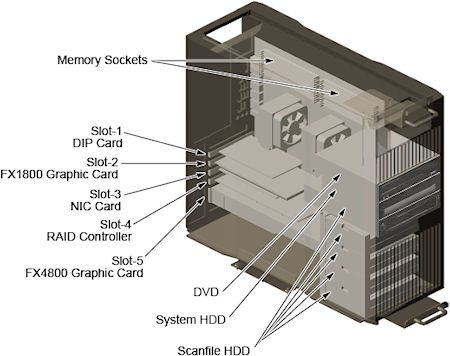

Operating Documentation
Direction 5181178-800, Rev# 16
BrightSpeed Select Service Methods Gen
Module Version 1.0, Version Date 3/23/10
Operating Documentation |
| Required Persons | Preliminary Reqs | Procedure | Finalization |
|---|---|---|---|
| 1 |
| Last Revised: | 08 February 2010 |
| Item | Qty | Effectivity | Part# | Manufacturer | |
|---|---|---|---|---|---|
| Standard FE Toolkit | 1 | - | - | - | |
| Item | Qty | Effectivity | Part# | Manufacturer |
|---|---|---|---|---|
| Ty-Raps® | As required | - | - | - |
| Item | Qty | Effectivity | Part# | Manufacturer | |
|---|---|---|---|---|---|
| Memory | 1 | - | - | - | |
| ||||
TO PREVENT DAMAGE TO COMPONENTS WITHIN THE Z800, OBSERVE THE
FOLLOWING ESD PRECAUTIONS:
FOR FURTHER INFORMATION REGARDING ESD PROTECTION, REFER TO THE SAFETY CHAPTER IN THIS PUBLICATION | ||||
| ||||
| IN ORDER TO MEET EMC REQUIREMENTS, THE CHASSIS MODULES MUST BE PROPERLY INSTALLED AFTER SERVICING. CHECK THAT THE MODULES ARE MOUNTED FIRMLY IN PLACE AND LOCKED DOWN WHERE APPLICABLE. | ||||
| ||||
| FOLLOW ALL REQUIRED SAFETY AND PPE PROCEDURES CUSTOMARY FOR YOUR ORGANIZATION WHEN WORKING ON THIS PRODUCT. | ||||
| Condition | Reference | Effectivity |
|---|---|---|
Only trained service personnel should service the GE CT Scanner. | - | - |
Select one of the following methods to Power OFF the Operator Console:
If Applications are up, click on the [Shut Down] button and select [Shutdown].
The Operator Console monitor will display a 'Power Down' message when it is acceptable to power OFF the Operator Console.
If Applications are down, open a Unix Shell. Type: halt.
Power OFF the console at the front panel switch.
Remove the left side cover of console.
Refer to Replacement → Console → (Console Cover Removal and Installation Procedure).
Remove the following components from the host computer (Z800):
Side Access Panel
Airflow Guide
Memory Fans
Illustration 1: Airflow Guide

Replace the existing z800 memory with new one.
Illustration 2: Host Computer (Z800)

Reinstall all removed components, and reconnect any cables that have been disconnected.
Refer to System Scanning Test to confirm proper operation.
Reinstall the console covers.